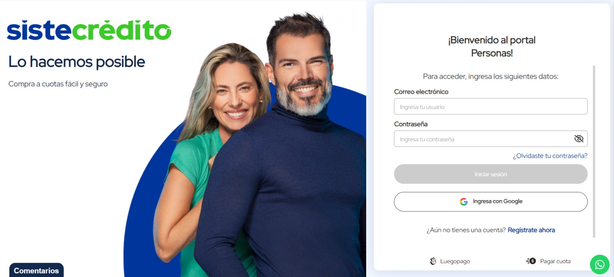

01 Overview
Sistecrédito is a Colombian fintech that offers consumer credit and installment payment solutions to millions of users. The customer portal is the primary access point for all their services, and the login screen is the first touchpoint every single user encounters.
In 2021 the existing version did not reflect the maturity or warmth of the brand. A redesign was needed to align the authentication experience with the visual identity Sistecrédito had been building in their campaigns and communications.
02 The Problem
The original login page was built as a functional shell. A white background, a logo, a photo on the left, and a form on the right. Each element existed independently without a compositional relationship. The brand photography was placed without a defined focal point or crop logic, and the form panel floated on a plain white surface with no color anchoring.
For a financial product where trust is built in seconds, the login screen was an opportunity being left on the table. The interface communicated nothing about the brand beyond its name in the corner.

Original login before the redesign
03 Process
I started by extracting the core brand colors from Sistecrédito's visual identity: the primary blue and the accent green. In Figma I sketched several layout directions focused on one question: how do you make a login screen feel like it truly belongs to this brand? The answer was a committed split layout.
The left half becomes a brand canvas anchored by a bold circular crop of their campaign photography over a solid brand blue. The right half strips back to just the form: two fields, a clear call to action, and a defined path for both external customers and internal collaborators. Once the layout was validated in Figma I moved to VS Code to build the final version directly in the browser.
04 Solution
The redesigned screen locks the brand into the authentication experience from the first pixel. The dark blue header inside the form card carries the primary brand color into the form itself, creating a visual thread from the left panel all the way through the right. The two user paths are now unambiguous: external customers fill in their credentials or sign in with Google, while internal collaborators have their own clearly separated access point.
The result is a login screen that communicates security and brand identity before the user types a single character. Something as routine as a login page became an expression of what the product stands for.